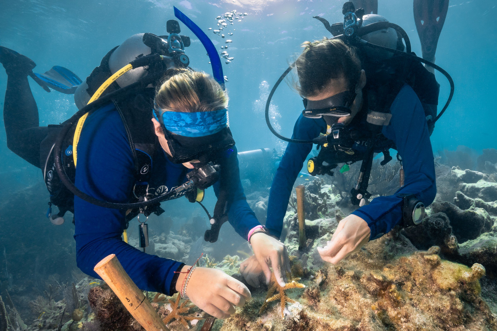

Below the lighthouse in the photo above
Back to the reef
Carysfort Lighthouse stands over Carysfort Reef. Below the surface, nursery-grown corals go back onto Florida Keys reefs piece by piece, fixed in place with marine epoxy.
In 2018, divers replanted staghorn coral here.
NOAANational Ocean Service, with partners
Read Back to the reef